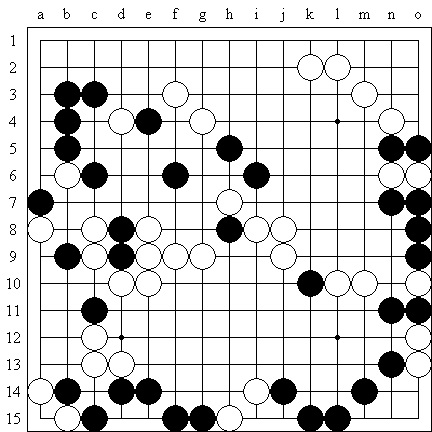

【行云专题】做VCF题的随想
#1 【行云专题】做VCF题的随想 作者：茗弈求学 发表时间：2010-3-3 12:00:26
一直认为，提高棋力的方法和途径是多样的，没有最正确的，只有最对路的。研究变化可以提高棋力，多参加实战也可以提高棋力，认真做些习题同样也可以达到这个目的。今天上午出门办事，坐在车上很是无聊，就拿出一道五子棋VCF习题看了起来。车子大概开了45分钟，花了30分钟时间自以为算出了正解，37步（单算进攻方）。从做习题来讲，VCT题目一般分3种，一是诘棋，大概就是追击胜的意思，这是锻炼人如何连续攻击取胜的能力，题目有难有易，很多具有实战价值，或者就是从实战中选出的；二是最短手胜，这是锻炼人如何面对存在不同胜法的情况下，选择最简洁取胜变化的能力；第三种比较独特，属于规定步数取胜的题目，如，三手四三胜、四手五连胜等，这能充分锻炼人的做棋、攻击、防御等多方面能力。总的来说，VCT题目能够锻炼人的计算广度。相对应的，更能单一体现计算深度的应该是VCF题目，而且VCF题目的设计往往难度高于VCT题目，在日本连珠界，有专门设计VCF题目的高手，其中的龙鹰、太田刚、山口釉水等都可以算得上是VCF题目设计者中的九段。国内专门从事这方面工作的人不多，似乎北京的姚志勇先生在这方面颇有造诣。我早在1999、2000年前后曾经设计过几道题目，但由于这种设计颇费心力，且当时也没有很好的电脑软件可以验证题目的解法是否的确是唯一性的，再加上之后事情多了，也就不多关心了。
记忆中最好的几道题目，解法不仅是唯一的，而且还存在以禁解禁、表面多条进攻线路但实际只有一条是正确的等情况，有一道题目最绝，黑棋225手形成五连，盘面没有一个多余的空格，这道题目似乎也成了当年的满分题。
目算VCF题最难的不仅仅在于很多点最初是不存在于盘面的，而且到了后面各个子之间还存在各种联系，还要考虑反与再反的次序问题。当年第三届上海名人邀请赛的时候，和山口、小朱等一起玩过，山口当时说，他最长的一次算了84步，狂汗！当时我和小朱都是算了15步。去年目算VCF大体在20-25步之间，这次超过了30步，应该值得庆贺，尽管最终的检验发现存在误区。

以上是原题，看在于2010年日本连珠社2月号的《连珠世界》上，出题人是松浦浩七段。出现问题的地方在下图的问号处。大家有兴趣也可以自己目测计算一下，最终需要大概47步。
［此帖子已被 茗弈小刀 在 2011-1-18 15:18:54 编辑过］
#2 Re:做VCF题的随想 作者：小帮帮 发表时间：2010-3-3 12:21:52
很好的文章，很好的体会！
#3 Re:做VCF题的随想 作者：无志气广林 发表时间：2010-6-4 13:36:11
有空去做一下，谢谢！